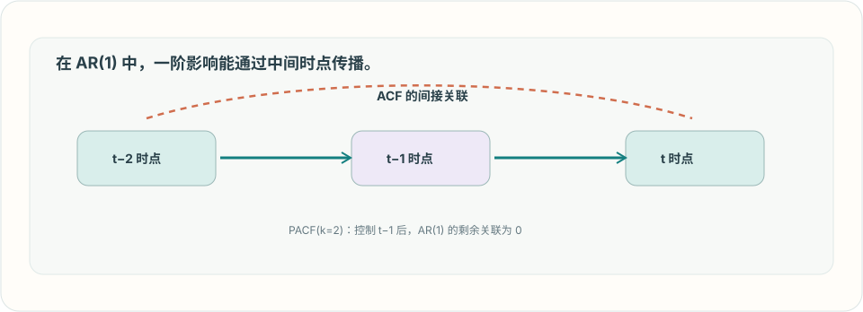
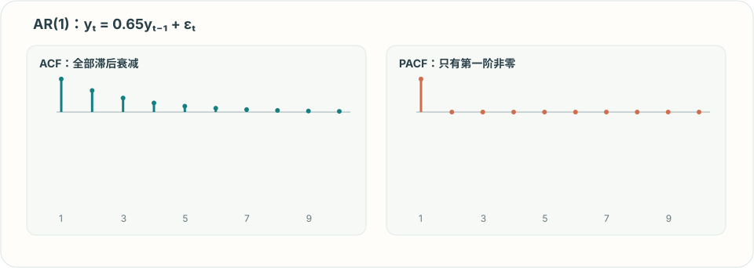

CHAPTER 04 / 28 · FOUNDATIONS
自相关与偏自相关
ACF 看总关联，PACF 看控制中间滞后后的线性关联。结合理论图谱、残差检验及 AIC/BIC，避免把截尾口诀当成自动识别器。
01 · ACF：衡量相隔 k 期的线性关联
在弱平稳且方差非零时，自相关函数定义为滞后 k 的协方差除以零阶协方差。ρ₀=1，正相关表示偏高的观测往往伴随另一时点也偏高，负相关表示偏高之后更常偏低。
ACF 衡量的是线性相关，不是因果关系；如果 ACF 接近零，仍可能存在非线性依赖。遇到明显趋势，应先处理非平稳性，否则相关图很容易受到共同趋势干扰。
02 · PACF：控制中间变量后的剩余关联
第 k 阶偏自相关衡量 Y_t 与 Y_(t−k) 在线性控制中间时点 Y_(t−1), …, Y_(t−k+1) 之后的关系。可以将它理解为 k 阶自回归线性投影中最后一个滞后项的系数。

“直接关联”在这里是统计投影术语，不意味着某个时点发生了因果影响。样本偏自相关还会随估计方法、样本量和异常值改变。
03 · AR(1) 的 ACF 为何拖尾
设 Y_t = 0.65Y_(t−1)+ε_t，创新没有序列相关、方差稳定，且选取平稳解。把上一期不断代入，可得理论自相关 ρ_k=(0.65)^k。只有第一阶是真正进入条件均值的滞后，但过去的影响会逐期传递。

对于纯 MA(q)，在标准创新假设下理论 ACF 于 q 阶后截尾，而 PACF 通常拖尾；AR(p) 则在理论上 PACF 于 p 阶后截尾。口诀只服务于初步筛选，不是证明阶数的定理。
04 · 白噪声与 Ljung–Box 的检验边界
弱白噪声通常是均值、方差稳定并在非零滞后上不相关的过程；它不一定独立同分布。Ljung–Box 将前 h 个样本自相关合并检验，原假设是这些滞后处没有线性自相关。
若 p 值较小，可认为残差中仍有统计上可检测的线性结构；若 p 值较大，只是没有充分证据拒绝，不能断言“残差就是独立白噪声”。拟合 ARMA 残差时，model_df 可设为模型估计的 AR、MA 阶数总和，并确认检验滞后大于自由度。
05 · 用 AIC/BIC 和时间回测交叉检查
ACF/PACF 用来生成少量候选模型，再通过拟合残差、信息准则与前向验证进行取舍。候选模型的比较必须基于可比的似然、相同的观测口径和合适的参数计数。
AIC 更偏向拟合与复杂度的某种折中，BIC 的参数惩罚随样本量变大而增强；不能把“两者不同就一定选简单模型”当作通用规则。面向预测的最终判断，应在未参与选择的未来区间进行。
06 · 可运行实验：先看原序列，再检验残差
下面用固定随机种子的 AR(1) 序列展示样本 ACF/PACF。检验原始序列时，预期可能发现自相关；真正检查已拟合模型是否吸收结构，要在模型残差上运行 Ljung–Box。
import numpy as np
from statsmodels.tsa.stattools import acf, pacf
from statsmodels.stats.diagnostic import acorr_ljungbox
rng = np.random.default_rng(2026)
eps = rng.normal(size=350)
y = np.zeros(350)
for t in range(1, len(y)):
y[t] = 0.65 * y[t-1] + eps[t]
a = acf(y, nlags=10, fft=False)
p = pacf(y, nlags=10, method="ywm")
print("ACF(1):", round(a[1], 3), "PACF(2):", round(p[2], 3))
print(acorr_ljungbox(y, lags=[10], return_df=True))
assert len(a) == len(p) == 11ACF 绘图中常用 ±1.96/√n 作为粗略显著性参考带，但其适用依赖特定近似条件，且多滞后同时判断会涉及多重比较问题。
资料与核对来源
本文中的数值与图像仅为可检查的教学模拟。统计假设、符号与 API 用法请对照下面的公开教材和官方文档。